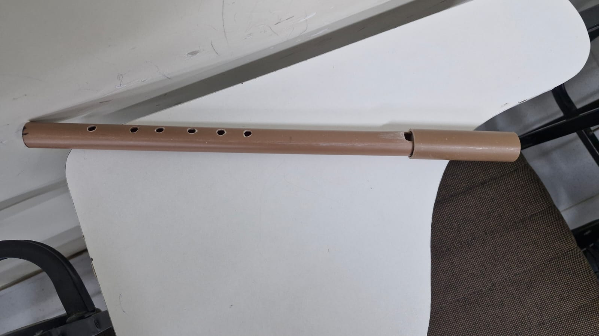
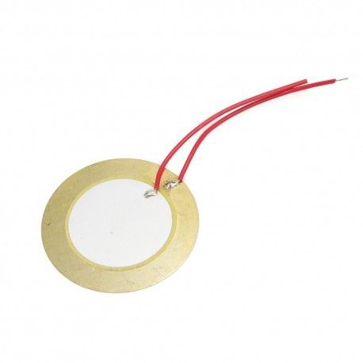
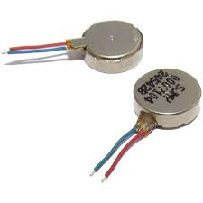

Metodologia do Projeto
Nossa abordagem técnica e científica para a inclusão musical.
Análise e Desenvolvimento do Protótipo

O propósito do trabalho é dar ouvidos para a comunidade surda, incluindo aqueles que desejam se comunicar pela arte musical. Para isso, desenvolveu-se um protótipo capaz de identificar notas musicais de uma flauta cromática artesanal. Um sensor capta a frequência das ondas sonoras, que são interpretadas por um microcontrolador, convertendo o som em impulsos elétricos enviados para motores de vibração.

O sensor piezoelétrico é essencial no projeto: ao ser submetido à pressão mecânica causada pelas vibrações da flauta, ele gera um sinal elétrico proporcional. Esse sinal é enviado ao microcontrolador, que interpreta o comportamento vibratório convertido pelo piezo, garantindo precisão na captação da nota musical.

O microcontrolador ESP32 realiza o processamento do sinal através da Transformada Rápida de Fourier (FFT), convertendo o sinal do domínio do tempo para o domínio da frequência. O algoritmo identifica as oscilações captadas pelo sensor, permitindo determinar com precisão a nota tocada.

Os motores vibracall transformam a frequência analisada em vibração física. Cada nota musical ativa um motor específico entre as 12 variações configuradas no sistema. Dessa forma, a vibração funciona como uma ponte entre o estímulo sonoro e a percepção tátil, permitindo que indivíduos com deficiência auditiva sintam a música.